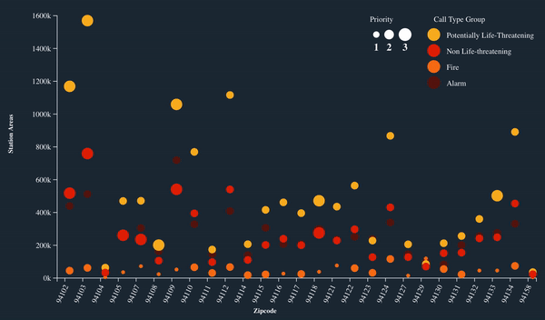

Visualizations
Station Area over Different Zipcode encoded with Priority and Call Type
Total Station Area for each Zipcode of Incident with diffferent priority and Call Type. Color shows different types of Call Type Groups.
Size of circles shows different Priority, where 3 is "Emergency".
Null Data is removed from Call Type group and zipcode.
Data acquired from "Fire Department Calls for Service" from https://data.sfgov.org/
Dharti Madeka
Data Encoding
For this visualization, Call Type group was color encoded and filtered to remove null values. Priority was filtered to get distinct count. Total Number of Station Area over different zipcode is interpretated. More filtered dataset was exported from Tableau.
Instructions
For this visualization, Brushing and Details on demand interactivity is implemented. When mouser over on each scatter plot than it is highlights it's own call Type and shows details in tool tip. Here is gif of it.
Analysis
From this visualization, it is interpretated that there are more "Potentially life threatening" calss rather than "Fire". It also seen that there irrespective of type of call. There are more Station Area in area of zipcode "94103 and 94102". According to Google Maps, it is in Tenderloin Area and Downtown. From this analysis, we came to know that number of Alarms and number of Station area are proportionally related. In future if there is more number of alarms for any call type group than demand for Station Area will increase.
Inspirations
Thanks Sophie Engle for code examples. Interactivity examples Color Legend and Size Legend
Top 10 Neighborhoods with highest number of Alarms in different years
Number of Alarms for each Neighborhoods. Color shows details about Call Date Year. The view is filtered on Neighborhoods and Call Date by Year.
Null Data is removed.
Data acquired from "Fire Department Calls for Service" https://data.sfgov.org/
Dharti Madeka
Data Encoding
For this visualization, Call Date was color encoded and filtered by Year. Total Number of Alarms over different Neighborhoods is interpretated. Neighborhoods is filtered out by keeping top 10 based on highest amount of Alarms.
Instructions
For this visualization, Brushing, responsive Legend and Details on demand interactivity is implemented. When mouser over on each bar than it is highlights it's own Year and shows details in tool tip. Also when clicked on each color in legend than it is highlighted. Here is gif of it.
Analysis
From this visualization, it is concluded that Tenderloin get's highest number of alarms in every year. Irrespective of what Call Type is, there is highest amount of Alarms in Tenderloin, Market and Mission.
Inspirations
Thanks Sophie Engle for code examples.
Interactivity examples
Color Legend
Stacked Bar chart
Responsive legend